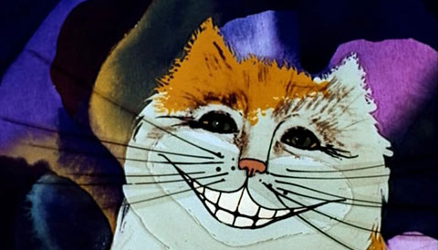

Приветствие Глава I Глава VI Глава VII
В просторной кухне дым стоял столбом; посредине на колченогом табурете сидела Герцогиня и качала младенца; кухарка у печи склонилась над огромным котлом, до краев наполненным супом.
- В этом супе слишком много перцу! - подумала Алиса. Она расчихалась и никак не могла остановиться.
Во всяком случае в воздухе перцу было слишком много. Даже Герцогиня время от времени чихала, а младенец чихал и визжал без передышки. Только кухарка не чихала, да еще - огромный кот, что сидел у печи и улыбался до ушей.
- Скажите, пожалуйста, почему ваш кот так улыбается? - спросила Алиса робко. Она не знала, хорошо ли ей заговорить первой, но не могла удержаться.
- Потому, - сказала Герцогиня. - Это чеширский кот - вот почему! Ах ты поросенок!
Последние слова она произнесла с такой яростью, что Алиса прямо подпрыгнула. Но она тут же поняла, что это относится не к ней, а к младенцу, и с решимостью продолжала:
- Я и не знала, что чеширские коты всегда улыбаются. По правде говоря, я вообще не знала, что коты умеют улыбаться.
